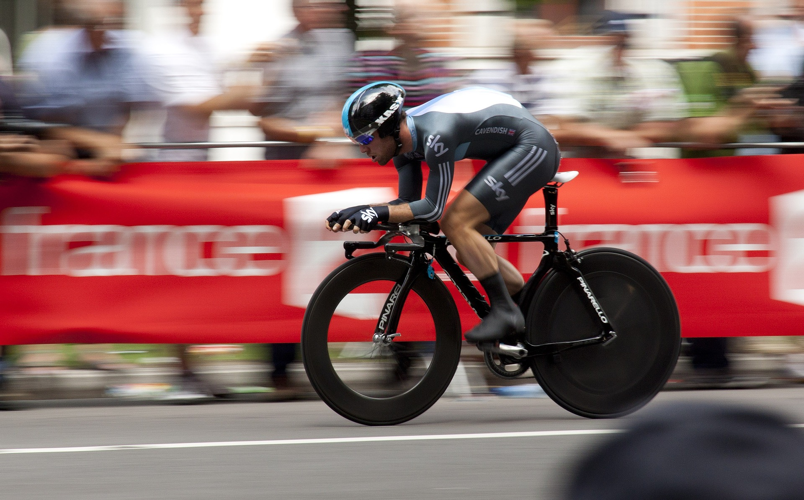

De inspanning die je moet leveren om een fiets vooruit te krijgen is voor een groot deel afhankelijk van de snelheid en de omgevingsfactoren zoals wind en helling. De fiets zelf speelt echter ook een belangrijke rol. De banden, de ketting, de houding, ... zijn allemaal factoren die mee bepalen hoeveel inspanning (vermogen) er moet geleverd worden om een bepaalde snelheid te halen. Deze eigenschappen van de fiets worden samengevat in typische weerstand. Een lage typische weerstand betekent dat men weining inspanning nodig heeft om vooruit te komen.
Typische weerstand is het vermogen dat de fiets nodig heeft om aan ontwerpsnelheid te rijden (in standaard omstandigheden), uitgedrukt in watt. Het is onbelangrijk of dit vermogen van de batterij, van de fietser of ergens anders vandaan komt.
Bij niet-elektrische fietsen is de typische weerstand bij ontwerpsnelheid steeds 100 W. Het is mogelijk om de typische weerstand bij een andere snelheid weer te geven, bijvoorbeeld bij 20 km/u
Er worden uitroltesten uitgevoerd in onderstaande omstandigheden.
Bij een uitroltest wordt de fiets op snelheid gebracht en wordt vanaf het moment dat er geen vermogen meer toegevoegd wordt de vertraging gemeten in verschillende punten. Via de bewegingsvergelijking en de massa van de fiets + fietser wordt het vermogen aan ontwerpsnelheid berekend.